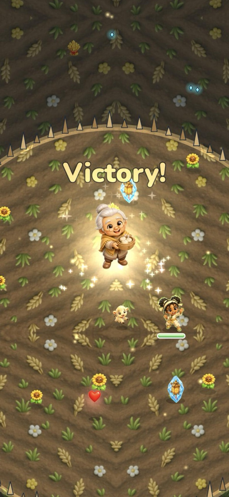

Balance is your superpower.
A five-element action game where kids master their feelings by freeing a frozen world.

Fun that teaches, built inEvery level is one element's world. You win through balance, and every villain is a person stuck in one feeling who changes back. Four of the five hand you their power. A proven genre, a family audienceSurvivor.io: an estimated $500M+ in its first 20 months [1]. Of US parents who game weekly, 81% play with their kids [2].
A proven genre, a family audienceSurvivor.io: an estimated $500M+ in its first 20 months [1]. Of US parents who game weekly, 81% play with their kids [2]. Playtest still, shared with consentPlayable todayFive web levels. One playtester: "I can't just leave right now." Two players are a story; this raise measures retention.
Playtest still, shared with consentPlayable todayFive web levels. One playtester: "I can't just leave right now." Two players are a story; this raise measures retention.
The ask
$60K–$100K
A pre-seed to put MorQi on iPhone and in the hands of about 100 families, then a small soft launch. In six to nine months we come back with day-1, day-7 and day-30 retention for a $1.75M–$4M seed.
| Native iPhone build | $30,000 |
| Art, animation and effects | $9,000 |
| Legal, IP and children's privacy (COPPA) | $6,000 |
| Soft-launch test marketing | $6,000 |
| Music, tools and contingency | $9,000 |
| Total at $60K | $60,000 |
DP Media347-414-2753
[1] Sensor Tower estimate via WN Hub, in-app purchases Aug 2022–Apr 2024. [2] ESA Essential Facts 2026. Founders: Amos, Demaris and Sammy. No ads, nothing for sale that gives a stat advantage, a grown-up gate on every purchase.